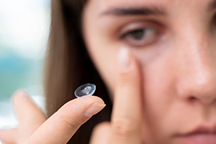
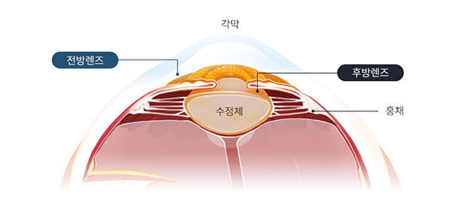

망막과 시신경의 건강까지 고려한 철저한 사전 검사로 가장 안전한 수술 기준을 제시
초고도근난시는 안구의 길이가 길어지면서 생깁니다.
초고도근난시는 눈 제일 안쪽의 망막, 시신경 부분에
질환이 동반되는 경우가 많아 시력교정 수술을 시행할 경우
철저한 검사가 필요하며 안전하게 가능한 기준이라도
신중한 결정이 필요합니다.
두꺼운 안경, 콘택트렌즈
없이는 일상생활이 어려움
높은 도수의 안경 착용 시
외관상 왜곡이 발생

렌즈를 착용하는 경우
건조증 및 염증성 안질환 위험 증가
낮은 도수의 안경을 장기간 착용 시
시력 저하 및 약시 위험 증가
넓은 레이저 조사범위 확보를 통한 빛번짐 억제
절삭량 최소화를 통한 각막혼탁과 건조증 억제
실시간 안구 회전을 추적하여 정확한 난시 교정 가능
중심이탈 치료 및 근시 퇴행 재교정에 탁월
각막의 손상을 방지하는 렌즈삽입수술
눈 상태에 따라 전후방 렌즈를 삽입
정교한 난시 교정
초고도 근시의 경우 우수한 시력회복 제공


월 화 목 금
am 09:00 ~ pm 06:00토 요 일
am 09:00 ~ pm 04:00점 심 시 간
pm 01:00 ~ pm 02:00수요일, 일요일, 공휴일 휴무입니다.
공휴일 있는 주는 수요일 대체진료입니다.